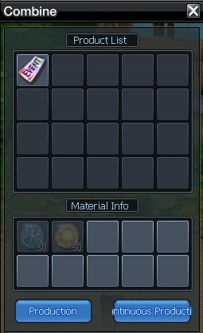

<main class="d-flex justify-content-center">
    <section class="component-container">
		<h1 class="prestige-title-1">Prestige 4</h1>
        <p class="prestige-text text-center bold">
            If you have become Prestige 4, you can teleport to the map by typing $warp p4.
        </p>

        <article class="prestige-article">
            <h2 class="prestige-title-2">C60 Equipments</h2>
            <h4 class="prestige-title-4">C60 Equipments Craft Scroll:</h4>
            <p class="prestige-text">- Heart of Belial 10x : Can be obtained from Color PvP winner side <br>
                (to craft Heart of Belial - Broken Heart of Belial 2x : Can be obtained from Color PvP loser side)</p>
            <h4 class="prestige-title-4">C60 Equipment materials:</h4>
            <ul class="prestige-list">
                <li class="prestige-list-item">- Holy Light x2 : Caligor raid box , hardcore raid box
                </li>
                <li class="prestige-list-item">- Belial's broken sword x5 : P4 "Belial" raid box</li>
                <li class="prestige-list-item">- Paimon's cursed soul x5 : P4 "Paimon" raid box</li>
                <li class="prestige-list-item">- Tower's metal x2 : Can be obtained from Tower 50th floor completion.</li>
                <li class="prestige-list-item">- Fernon's Energy 1x : Time space box & daily quest.</li>
                <li class="prestige-list-item">- Dragon's Wing 2x : You can get it by doing Hardcore Raid daily quest.</li>
                <li class="prestige-list-item">- Flame Crystal x2</li>
            </ul>
            <div class="d-flex justify-content-center"></div>
            <p class="prestige-text bold">Note: Don't forget to put the C55 Equipment in the first slot of your inventory while crafting.</p>           
        </article>
        <article class="prestige-article">
            <h2 class="prestige-title-2">Hardcore Raid</h2>
            <ul class="prestige-list">
                <li class="prestige-list-item">- You can buy Hardcore raid seal from Raid Seal Npc (2kk). Raid can be done 5 times per day. (including failed raids)
                </li>
                <li class="prestige-list-item">- It is 15x people raid, boss will deal HP% damage .</li>
                <li class="prestige-list-item">- Daily quest : finish 3 times Hardcore Raid and You can get rewards : Dragon's Wing</li>
                <li class="prestige-list-item">- You will get Easy Coins, Medium Coins , Hard Coins , Very Hard Coins , Hardcore Raid Box when you finished.</li>
            </ul>
            <h4 class="prestige-title-4">You can craft at Hardcore Rewards NPC with these Coins :</h4>
            <div class="d-flex justify-content-center"></div>
            <h4 class="prestige-title-4">You can craft at Hardcore Rewards NPC with these Coins :</h4>
            <div class="d-flex justify-content-center"></div>
        </article>
        <article class="prestige-article">
            <h2 class="prestige-title-2">Time Space</h2>
            <p class="prestige-text">Party Time Space with max 3 people</p>
            <h4 class="prestige-title-4">For unlocking the gate , You must kill all the mobs (except rooms with bosses) / bosses alive.</h4>
            <ul class="prestige-list">
                <li class="prestige-list-item">- 1st room - for buff / transform etc.
                </li>
                <li class="prestige-list-item">- 2nd room - Kill all 12 mobs.</li>
                <li class="prestige-list-item">- 3rd room - Kill all 10 mobs.</li>
                <li class="prestige-list-item">- 4th room - Kill all 17 mobs.</li>
                <li class="prestige-list-item">- 5th room - Kill Boss Powerful Molda's Warlock.</li>
                <li class="prestige-list-item">
                    - 6th room - Kill Boss Kenel, Boss Kukukeen and Boss Powerful Molda's Warlock
                    <div>
                        <p class="prestige-text bold">You can find bosses on the red spots of next image</p>
                        <div class="d-flex justify-content-center"></div>
                    </div>
                </li>
                <li class="prestige-list-item">- 7th room - Kill Boss Fernon Dryad.</li>
            </ul>
            <h4 class="prestige-title-4">You will get 1x Iron Key and Time Space Box after finished Time Space.</h4>
            <p class="prestige-text">You can use iron key to open Bloddy Chest, from c40-50map Bushi King.</p>
            <h4 class="prestige-title-4">Time space raid box info :</h4>
            <div class="d-flex justify-content-center"></div>
        </article>
       
        <article class="prestige-article">
            <h2 class="prestige-title-2">Lottery System</h2>
            <div class='d-flex justify-content-center'>
                
            </div>
            <h4 class="prestige-title-4">Coins Trader NPC :</h4>
            <p class="prestige-text">
                - You can Craft 1x Lottery Ticket with 50x Sunny Coins , 50x Snowy Coins (Drops from c30-c40maps).
            </p>
            <div class='d-flex justify-content-center'>
                
            </div>
            <h4 class="prestige-title-4">Lottery Ticket NPC :</h4>
            <p class="prestige-text">
                - You can get 1x Lottery Box with 1x Lottery Ticket.
            </p>
            <div class='d-flex justify-content-center'>
                
            </div>
        </article>
    </section>
</main>